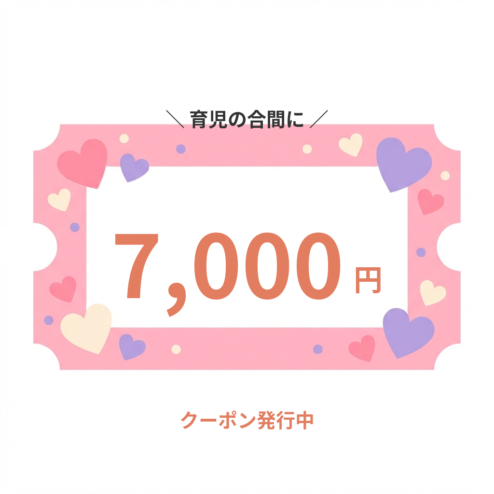

ママだって肌荒れする。
でも、こんな悩みありませんか？
- ✔ 自分のスキンケアにかけるお金や時間がない
- ✔ 子供を連れて皮膚科に行くと、待ち時間でぐずるのが怖い
- ✔ 「美容なんて二の次」と自分に言い聞かせている
- ✔ ふと鏡を見た時、疲れた顔の自分に落ち込む
- ✔ 高い化粧品を買っても、ゆっくり塗る暇がない


ママの笑顔は、
家族みんなの栄養です。
「子供優先」は素晴らしいこと。
でも、ママ自身が無理をしてボロボロになってしまっては、
家族も心配してしまいます。
スキンケアは、単なる美容ではありません。
自分を大切にする「休息の時間」であり、
明日も笑顔でいるためのエネルギーチャージ。
東京美肌堂は、
忙しいママが「罪悪感なく」
「最短距離で」キレイになるお手伝いをします。
なぜ、忙しいママにこそ
「医療用医薬品」なのか？
時間がないからこそ、
「なんとなく」のケアではなく
「確実性」の高い医療を取り入れるべきです。
最短ルートの治療
自己判断で化粧品を試し続けるより、医師の診断で最適な薬を使う方が、結果的に時間もお金も節約になります。
飲むだけで全身ケア
内服薬なら、顔だけでなく、家事で荒れがちな手や、見えない背中のケアまで同時に完了。
シンプルだから続く
何ステップものスキンケアは不要。食後にさっと飲むだけなので、バタバタな毎日でも続けられます。
ママのライフスタイルに
徹底的に寄り添います
授乳中・妊娠中も安心
問診でお伝えいただければ、体に負担の少ない、安全なお薬を医師が選定します。
すっぴん・部屋着でOK
自宅からのビデオ通話なので、お出かけの準備は不要。子供が泣いても周りを気にする必要はありません。
薬局に行かなくていい
処方薬はポストに届くので、感染症が流行っている時期に子供を連れて薬局に並ぶ必要もありません。
夜22時まで診察
子供を寝かしつけた後の「ひとり時間」に、ゆっくり相談できます。

処方薬について
アスコルビン酸
パントテン酸カルシウム
シミの原因を抑え美白が期待できると同時に、エイジングケアにも。
トラネキサム酸
シミ・肝斑の第一選択薬。メラニンの生成を抑制します。
L-システイン
ターンオーバーを正常化し、ニキビや肌荒れを改善します。
ビタミンE
「若返りのビタミン」。強力な抗酸化作用で血行を促進。
グルタチオン
白玉点滴の主成分。強力な抗酸化作用で美白・デトックス。
オンライン診療の流れ
STEP 1

LINEで予約
公式LINEを友だち追加して、希望の日時を選択して予約完了。
STEP 2

医師の診察
予約時間にビデオ通話で診察開始。肌悩みを相談してください。
STEP 3

処方・決済
診察後、あなたに合った処方プランをご提案・決済。
STEP 4

お薬のお届け
ご自宅のポストなど、指定の場所に配送します。
よくある質問
Q. 東京美肌堂とは？
A. オンライン診察を行う医師と患者様をつなぐサービスです。
Q. スマホだけで受診できますか？
A. はい、問診から診察、配送まで公式LINEで完結します。
Q. 保険証は必要ですか？
A. いいえ、自由診療のため保険証は不要です。
Q. 診察時間は？
A. 問診記入後、約10分程度で完了します。
Q. 薬のみの購入は？
A. 医師の判断により、単品での処方も可能です。
Q. 今症状がなくても受診できますか？
A. 可能です。予防医療としてもご利用いただけます。
Q. 他の薬との飲み合わせは？
A. 問診時に医師にご相談ください。
Q. 予約変更はできますか？
A. LINEにてご連絡いただければ承ります。